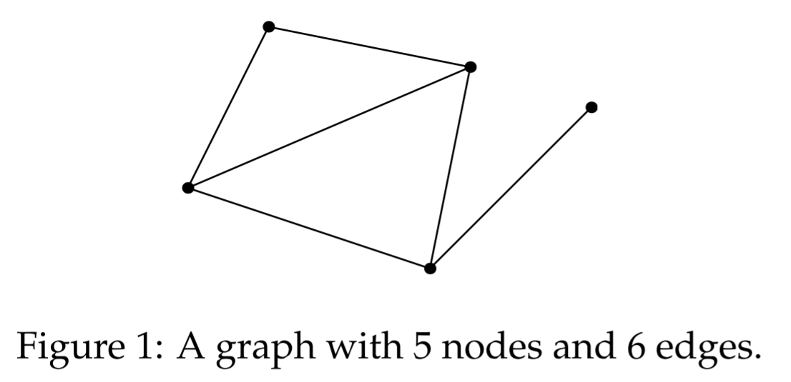

线性代数笔记(十一)——矩阵空间、秩1矩阵和小世界图
本讲是上一讲的扩展内容，共分为三部分：第一部分延续上一讲介绍了矩阵空间的特性并延展到微分方程的例子；第二部分介绍了一个特殊的秩1矩阵；第三部分介绍了图的概念以及图与矩阵的关系。
矩阵空间、秩1矩阵和小世界图
矩阵空间
话接上一讲，所有$3\times 3$的矩阵可以构成的封闭的空间（数乘和加法运算），记为$M$，则其一组基为：
对称矩阵构成的空间$S$和上三角矩阵构成的空间$U$是$M$的子空间：
对称阵$S$的基容易找到：
上三角阵$U$的基：
对角矩阵是对称阵和上三角矩阵的交，可以得到另一个子空间：$D$，$D$的基容易找到：
因此，有：$dim M=9$，$dim S=6$，$dim U=6$，$dim D=3$。
- 求和（sum）：$S+U=M, dim(S+U)=9$；
- 求交（intersect）：$S \cap U=D, dim(S \cap U)=3$；
可以看出：$dim S + dim U=12=dim(S+U) + dim(S \cap U)$。
$S+U$其实就是$M$，但是要注意$S+U$并不是$S \cup U$（这东西也不封闭，构不成空间），后者只包含了$S$和$U$，而前者包含的是$S$中元素和$U$中元素的线性组合，这样的线性组合显然包含了$S$和$U$，也即 $(S \cup U) \subseteq (S + U)$。
微分方程
空间内元素还可以进一步扩展，不仅限于矩阵或向量，比如还可以是微分方程的解。
例如，求解：$\frac{d^2y}{dx^2}+y=0$，即$y’’+y=0$
方程的解有：$y=\cos{x}, \quad y=\sin{x}, \quad y=e^{ix}, \quad y=e^{-ix}$等等（$e^{ix}=\cos{x}+i\sin{x}, \quad e^{-ix}=\cos{x}-i\sin{x}$）
只考虑实数范围，该方程的通解为：$y=c_1 \cos{x} + c_2 \sin{x}$。
这很类似于零空间，可以把这些解看成零空间中的向量，其一组基为$\cos{x}, \sin{x}$，零空间的维数为2。同理，如果考虑复数范围，那么$e^{ix}, e^{-ix}$也可以作为另一组基。
该微分方程的所有解的集合实际上就可以看做是一个“向量空间”，或者应该叫“解空间”，他们满足加法和数乘的封闭性。
秩1矩阵
秩$1$矩阵，即秩为$1$的矩阵。所有的秩$1$矩阵都可以分解成一列乘以一行（$A=UV^T$）的形式，如：
其中$dimC(A)=1=dimC(A^T)$，$U, V$均为列向量。
秩$1$矩阵类似积木，任何矩阵都是由秩$1$矩阵搭建而成的，如对于一个$5 \times 17$秩为$4$的矩阵，只需要$4$个秩一矩阵就可以组合出来，具体过程类似于我们在第3讲中提到的矩阵乘法中的“列乘行”形式。
同秩矩阵的集合
另外，矩阵的加法存在这样的性质：$rank(A+B) \le rank(A)+rank(B)$。这意味着：对于同样规模的同秩矩阵所组成的集合，其加法是不封闭的。两个$5\times 6$的秩为$4$矩阵相加，结果的秩可能大于$4$，因此，所有秩为$4$的矩阵构成的集合并不是空间，同理，秩$1$矩阵集合也不是空间。
子空间转化
$\mathbb{R}^4$空间中任一向量$v=\begin{bmatrix}v_1\ v_2\ v_3\ v_4\end{bmatrix}$共有4个分量，取$\mathbb{R}^4$中满足$v_1+v_2+v_3+v_4=0$的所有向量组成一个向量空间$S$，则$S$显然是一个向量子空间。易看出，不论是使用系数乘以该向量，或是用两个满足条件的向量相加，其结果仍然落在分量和为零的向量空间中。
$S$的维数
从另一个角度看，$v_1+v_2+v_3+v_4=0$等价于:
则$S$就是$A=\begin{bmatrix}1&1&1&1\end{bmatrix}$的零空间。$rank(A)=1$，则对其零空间有$rank(N(A))=n-r=3=dim N(A)$，则$S$的维数是$3$，其基为$Av=0$的三个特解：$\begin{bmatrix}-1\1\0\0\end{bmatrix}$,$\begin{bmatrix}-1\0\1\0\end{bmatrix}$,$\begin{bmatrix}-1\0\0\1\end{bmatrix}$
矩阵$A$的四个基本子空间：
- 列空间：$dim C(A)=1$，其中一组基是$\begin{bmatrix}1\end{bmatrix}$，可以看出列空间就是整个$\mathbb{R}^1$空间。
- 零空间：$dim N(A)=3$，其中的一组基是$\begin{bmatrix}-1\ 1\ 0\ 0\end{bmatrix}\begin{bmatrix}-1\ 0\ 1\ 0\end{bmatrix}\begin{bmatrix}-1\ 0\ 0\ 1\end{bmatrix}$。
- 行空间：$dim C(A^T)=1$，其中的一组基是$\begin{bmatrix}1\ 1\ 1\ 1\end{bmatrix}$；
- 左零空间：$dim N(A^T)=0$，因为$A$转置后没有非零的$v$可以使$Av=0$成立，左零空间就只有$\begin{bmatrix}0\end{bmatrix}$。
综上：
小世界图
图是点和边的集合，边连通各个点。

假设，每个人是图中的一个节点，如果两个人为朋友关系，则在这两个人的节点间添加一条边，通常来说，从一个节点到另一个节点只需要不超过$6$步（即六条边）即可到达，这就是大名鼎鼎的“六度分割理论”。
图与矩阵有怎样的联系呢？下一讲会进行阐述。